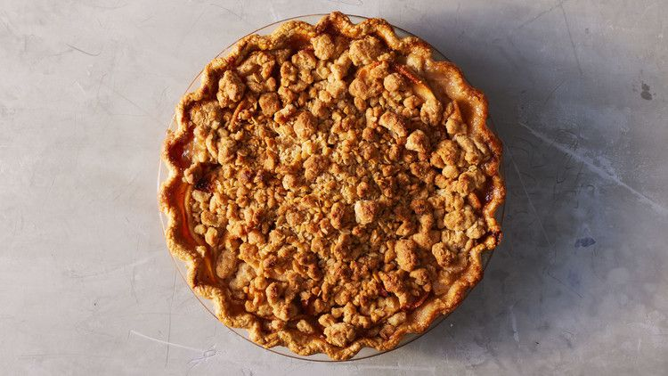

Apple crumble pie

Description
A delicious apple crumb cake. Finally, after all these years, I've come up with a solution for people who can't decide whether to make an apple crumble or a coffee cake. This features the best things about both of those recipes. It's like baking a crumb-topped coffee cake on top of another coffee cake!
Ingredients
- 2 teaspoons unsalted butter
Dry Ingredients:
- 2 cups all-purpose flour
- 1 teaspoon baking powder
- ¾ teaspoon baking soda
- ½ teaspoon fine sea salt
Crumble Mixture:
- 1 ½ cups finely chopped toasted walnuts
- ⅓ cup packed light brown sugar
- ⅓ cup white sugar
- 3 tablespoons unsalted butter, melted
- 1 teaspoon ground cinnamon
- ¼ teaspoon salt
Wet Ingredients:
- 1 cup white sugar
- ½ cup unsalted butter, at room temperature
- 2 large eggs
- 1 cup plain yogurt
- 1 ½ teaspoons vanilla extract
- 2 Honeycrisp apples
Steps
- Gather your ingredients.
- Preheat the oven to 350 degrees F (175 degrees C). Butter a 9x12-inch baking dish generously.
- Mix dry ingredients: Whisk flour, baking powder, baking soda, and salt together in a bowl. Set aside.
- Make the crumble: Combine walnuts, brown sugar, white sugar, melted butter, cinnamon, and salt in a bowl. Mix until walnuts and sugar are thoroughly coated with butter.
- Mix the wet ingredients: Cream sugar and butter together in another bowl with a spatula until well blended.
- Add 1 egg and whisk until mixture is smooth, 2 to 3 minutes.
- Whisk in second egg until thoroughly incorporated. Add yogurt and vanilla; whisk together.
- Add dry flour mixture to wet ingredients; whisk just until flour disappears. Do not overmix.
- Remove cores from apples. Cut across into 1/8- to 1/4-inch slices. Stack up a few slices, make a cut down the center, and dice across into cubes.
- Add to cake batter, folding in with a spatula until just combined.
- Spread 1/2 of the batter evenly into the bottom of the prepared baking dish. Scatter 1/2 of the crumble mixture evenly over the top.
- Top with the rest of the batter in dollops. Spread carefully to evenly distribute, trying not to disturb the crumbs.
- Top with the rest of the crumb mixture. Press crumbs into the batter very gently.
- Bake in the center of the preheated oven until a toothpick or bamboo skewer inserted into the center comes out clean, about 40 minutes.
- Let cool to room temperature, about 30 minutes, before slicing and serving.